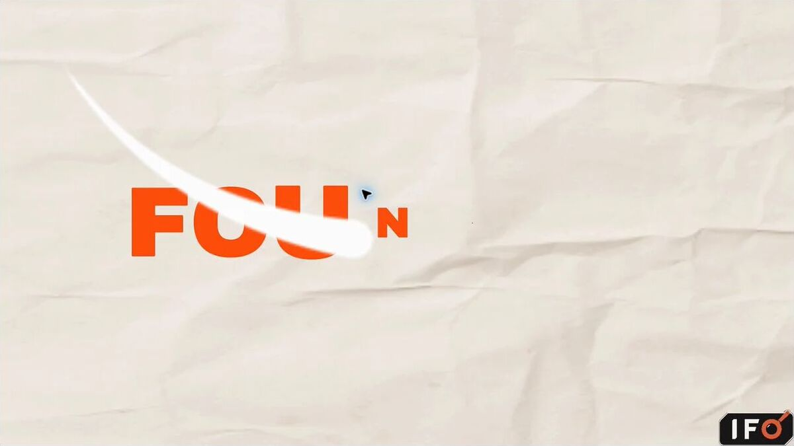

Impressions
Recorded across a recent X analytics window.
AI content strategy · product research
I’m Israel Femi-Ojo. I test AI products, find what matters to the customer, and turn the evidence into content and messaging people can understand.
Selected work
Not surface-level reviews. Each project begins with a real question, follows the evidence and leaves a team with something it can act on.
AI evaluation · Case study 01
I built a controlled test with six fictional company documents and ten planted issues to see whether three AI models could separate confirmed facts from risky claims.
Product research · Case study 02
The test I planned never started. By documenting exactly where I became stuck, I found four onboarding and product-copy problems the founder later confirmed.
Missing data and filtered data returned the same state.
Founder-confirmed integration fault.02
Content in practice
I turn product ideas into useful explanations, visual stories and timely contributions to live AI conversations.
Explore content work
Selected evidence
Metrics have context here. Each number is tied to the work that produced it.
Recorded across a recent X analytics window.
Built through consistent participation in AI conversations.
A timely contribution placed inside an existing conversation.
After reading a practical thread about saving money on flights.
What I do
I test the experience against the promise and identify what could confuse or stop a customer.
I find the strongest reason to care, then build the message and content direction around it.
I turn one direction into clear briefs, campaigns and platform-ready work without losing accuracy.
Let’s work together
I’m open to remote content roles, product-research projects and collaborations with AI and technology teams.
Start a conversation